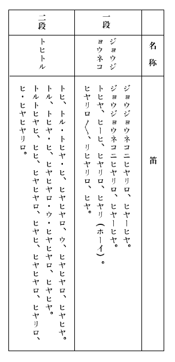

今日では埼玉県入間郡
続日本紀、元正天皇霊亀二年五月の条に、「駿河、甲斐、相模、
この
高句麗は
ともかく扶余族の発祥地はハッキリしないが満洲から朝鮮へと南下して、高句麗、百済の二国をおこしたもので、大陸を移動してきた民族であることは確かなようです。
この民族の一部はすでに古くから安住の地をもとめて海を越え、日本の諸方に住みついていたと考えられます。高句麗は天智天皇の時代に
自分の一族だけで自分勝手に海をわたり、どこかの浜や川の中流、上流などで舟をすて、自分の気に入った地形のところへ居を定めた。というテンデンバラバラの家族的な移動は、日本の諸地に無数にあったものと想像しうるのである。
もとより、新羅人や百済人の来朝移住も多かった。南鮮と九州もしくは中国地方の裏日本側とを結ぶ航海が千数百年前に於ても易々たるものであったことは想像に難くない。いかなる猛獣や毒虫が住むかも知れぬ原始の山野を歩くのに比べれば、南鮮と北日本を結ぶ航海の方ははるかに易々たるものであったに相違ない。
戦後の今日、朝鮮からの密輸や密入国は発動機船を用いているらしいが、それは監視船の目をくぐるに必要な速力がいるための話で、まだ沿岸に監視の乏しかった終戦直後には大昔と変りのないアマの小舟でさかんに密輸や密入国が行われ、それで間に合ったのだ。別に監視のあるわけでもない大昔には、アマの小舟で易々と、また無限に入国して、諸方に定住し得たのは自然であろう。
遠く北鮮の高句麗には、南鮮と北九州北中国を結ぶような便利はないが、今日、密輸入密入国の一基地はウラジオストックに近い北鮮の羅津あたりにもあって、小舟によって潮流を利用したり、または潮流を利用して荷物を流す方法もあるという話であるが、荷物を流すのはとにかくとして、潮流を利用するというカンタンな航海法、もしくは出航後自然に潮流に乗ってしまったという航海の可能性は十二分に考えられるのである。
この潮流は季節によって異るかも知れないが、たとえば、裏日本の海辺に於ては太平洋戦争前から再々ウラジオストックの機雷の漂流に悩んでいたのであった。ウラジオのものらしい機雷が津軽海峡にまで漂流し、本土と北海道を結ぶレンラク船の航海にまで危険が起ったのは今年の話である。東京はじめ太平洋岸の人々にとってウラジオの機雷という物騒な漂流児が話題にのぼったのはようやく今春来のことである。
けれども裏日本の海辺がウラジオからの漂流機雷に悩みはじめたのは太平洋戦争の起る前からのことだ。私が昭和十七年の夏に新潟市へ行ったとき、博物館（であったと思う。あるいは別の場所だったかも知れない）でドラムカンの化け物のようなこの機雷を見た。それはその年かその前年ごろ新潟の浜へ漂着し工兵が処理したものであったが、すでに当時から裏日本の諸方の浜ではこの機雷に悩んでいた。もっともそのタネは日本がまいたようなもので、支那で戦争を起したりノモンハン事変などもあったから、ロシヤはウラジオ港外に機雷網をしいて用心しはじめたのであろう。それが冬期の激浪にもまれ解氷時に至ってロビンソン・クルーソーの行動を起すもののようである。
この日本海の漂流児は能登半島から福井方面へ南下するのもあるが、富山方面へ南下して佐渡と新潟間より北上を起して途中の浜辺でバクハツせずについに津軽海峡にまで至り、そこから更に太平洋にまで突入して行方をくらますという颱風の半分ぐらいも息の長いのが存在しているのである。そして、能登半島から山陰方面へ南下するのと、富山新潟方面へ南下して更に北上するのと、どっちの方が多いのか知らないが、富山新潟方面へ南下して更に北上する漂流横雷が決して少数ではなく、敗戦後元海軍の技術将校にきいた話では、そッちへ流れるのが春夏の自然の潮流だという話であった。ともかく多くの漂流機雷が能登半島の北岸沿いに新潟秋田方面にまで北上していることは事実なのである。
日本の原住民はアイヌ人だのコロポックル人だのといろいろに云われておるが、貝塚時代の住民はとにかくとして、扶余族が北鮮まで南下して以来、つまり千六七百年ぐらい前から、朝鮮からの自発的な、または族長に率いられた家族的な移住者は陸続としてつづき、彼らは貝塚人種と違って相当の文化を持っておったし、数的にも忽ち先住民を追い越す程度の優位を占めたものと思われる。先住民が主として海沿いの高台に居を占めて原始生活をしていたのに比べて、彼らは習性的に（または当時の彼らの科学的考察の結果として）山間の高燥地帯に居を占め、低地の原野を避けるような生活様式を所有しておった。大昔の低地は原始林でもあるし洪水の起り易い沼沢地帯でもあって毒虫猛獣の害も多く、それに比して山岳地帯の盆地の方が居住地としての安全率が高かったのであろう。そこには先住民たる貝塚人種の居住もなく、全てに於て山間に居住地を定める方が他部落とのマサツや獣虫天災の被害が少なかったのであろう。またコマ、クダラが亡びて後は特に密入国的な隠遁移住が多かったであろう。
つまり天皇家の祖神の最初の定着地点たるタカマガ原が日本のどこに当るか。それを考える前に、すでにそれ以前に日本の各地に多くの扶余族だの新羅人だのの移住があったということ、及び当時はまだ日本という国の確立がなかったから彼らは日本人でもなければ扶余人でもなく、恐らく単に族長に統率された部落民として各地にテンデンバラバラに生活しておったことを考えておく必要がある。
つまり今日に於てもウラジオストックからの漂流機雷が津軽海峡のレンラク船をおびやかす如くに、当時に於ても遠く北鮮からの小舟すらも少からぬ高句麗の人々をのせて越や出羽の北辺にまで彼らを運び随所に安住の部落を営ませていたであろうということを念頭にとどめておくべきであろう。
むろん馬関海峡から瀬戸内海にはいって、そこここの島々や九州四国本州に土着したのも更に多かったであろうし、一部は長崎から鹿児島宮崎と九州を一巡して土着の地を探し、または四国を一巡したり、紀伊半島を廻ったり、中部日本へ上陸したり、更に遠く伊豆七島や関東、奥州の北辺にまで安住の地をもとめた氏族もあったであろう。そして彼らは原住民にない文化を持っていたので、まもなく近隣の支配的地位につく場合が少くなかったと思われる。
霊亀二年五月に今の
「駿河と甲斐と相模と上総と下総と常陸と下野の七ヶ国のコマ人一千七百九十九人を武蔵の国にうつしてコマ郡をおいた」
とある通り、すでに各地に土着しておったコマ人を一ヶ所にまとめたにすぎない。
これがコマ人の総数でなかったことは確かであろう。恐らくそれ以前に日本各地に土着したコマ人たちは、単に部落民として中央政府の支配下に合流して自らをコマ人、クダラ人、シラギ人などと云うことなく新天地の統治者に服従して事もなく生活していたに相違なく、これに反して、すでに日本の諸地に土着しつつも敢てコマ人と称して異を立てておった七ヶ国のコマ人一千七百九十九人の方が珍しい存在と云うべきであろう。彼らが土地を移して一ヶ所にまとめられた意味はそういうところにあるのかも知れない。
この移住は高句麗が新羅に亡ぼされてのち約五十年後に起った。そしてその後、
「天平宝字二年八月に帰化の新羅僧三十二人と尼二名と男十九人女二十一人を武蔵国に移して新羅郡をおいた」
という記事もある。
「天平宝字五年春正月、美濃と武蔵二ヶ国の少年二十人ずつに新羅語を習わせた」
という記事もある。武蔵の国の新羅郡というのは明治二十九年に北足立郡に編入された新座郡のことだそうだ。
高句麗と百済と新羅の勢力争いは、日本の中央政権の勢力争いにも関係があったろうと思われる。なぜなら、日本諸国の豪族は概ね朝鮮経由の人たちであったと目すべき根拠が多く、日本諸国の古墳の出土品等からそう考えられるのであるが、古墳の分布は全国的であり、それらに横のツナガリがあったであろう。そしてコマ系、クダラ系、シラギ系その他何系というように、日本に於ても政争があってフシギではない。むしろ、長らくかかる政争があって、やがて次第に統一的な中央政権の確立を見たものと思われる。
時の政府によって特に朝鮮の一国と親しんだものや、朝鮮の戦争に日本から援軍を送った政府もあり、そこに民族的なツナガリがあったのかも知れない。
コマ（コクリをさす。以下も同じ）の文物を最も多くとりいれたのは聖徳太子のころであるが、太子はさらに支那の文化を直接とりいれることに志をおいた。日本統一の機運とは、まさにこれであったと私は思う。
何系何系の国内的の政争が各自の祖族やその文化にたよる限り国内の統一はのぞめない。これを統一する最短距離は、そのいずれの系統の氏族に対しても文化的に母胎をなす最大強国の大文化にたよるにまさるものはない。太子の系統はコマの滅亡と共にあるいは亡びたかも知れないが、ともかく日本統一の機運を生みだした日本最初のまた最大の大政治家は聖徳太子であったと云えよう。支那の文物を直接とりいれる機運のたかまると共に日本の中央政府は次第に本格的に確立して、奈良平安朝のころに雑多の系統の民族を日本人として統一するに至った。こうして民族的な雑多な系統は消滅したが、それは別の形で残ったものもある。それが何々ミコトや何々天皇、何々親王の子孫という系譜である。源氏や平家の系譜の背景にも相当の古代にさかのぼっての日本史の謎があるように思われる。桓武、清和、宇多というような平安朝の天子を祖とすることまではハッキリしているが、その平安朝の天子に至るまでの大昔が問題であり謎である。甚しい謎だ。
桓武天皇はどうして遷都しなければならなかったのだろう？ なぜ長岡の工を中止したのだろう？ それから数代、必ず前天皇の子を皇太子に立てる風習はなぜだろう。
後年南北朝の休戦条約に交替に皇位継承というのがあるが、それは当時の新工夫ではなく、非常に古い源流があったのではないかと思われる節々もあるのです。
藤原京を経て奈良京に都したとき、日本の中央政府はどうやら確立の礎が定まったと見ることができる。
武蔵の国に七ヶ国のコマ人をあつめてコマ郡をおいたのはその時のことだ。全国各地に土着した多くのコマ人は決して自らコマ人などとは称せず、中央政府のもとに日本人になりきってしまった時だ。七ヶ国の一千七百九十九名だけが、なぜコマ人と称して異を立てる理由があったのだろう？
コマの祖国はその約五十年ほど前にシラギに亡ぼされているのだが、そのときコマの王様王族が日本へ亡命したというような記事は歴史に現れていない。
むしろシラギがコマを亡した直後に続々来朝移住したのはシラギ人だが、勝った方が堂々と来朝移住し、負けた方がコソコソ遁入して隠遁定着するのも自然の数で、正史が亡命者の方を大ッピラに記載できないような意味もあったろう。そして関東一円にもシラギの移住は甚しく多かった。一まとめに何千人というのはないが少数ずつ次々とあって、コマの移住者の比ではないようだ。
ただ大宝三年四月の条に、
「従五位下高麗若光に
とあって、大宝三年というとコマ亡びて三十五年後だが、シラギ人の賑やかな来朝移住時代にコマ人が王姓をもらい、これがコマ家の祖先と云われている。コマ村のコマ神社の宮司コマ家に伝わる系図によると、武蔵の国現入間郡コマ村のコマ人はここに移り集って若光に統率されていたもので、その子孫がコマ神社宮司家であることになっているのだ。
この系図は中世にいったん焼け、そこで一族全員の記録を集めて新しく造ったものであるが、その書き出しは虫がくってチョン切れておって、
「これによってつき従ってきた貴賤相集り、屍体を城外にうめ、また神国の例によって、御殿の後山に霊廟をたて、コマ明神とあがめ、郡中に凶事があるとこれに祈った。長子家重が家をついだ。天平勝宝三年に僧勝楽が死んだ。弘仁と其の弟子の聖雲とが遺骨を納めて勝楽寺をたてた。聖雲は若光の三番目の子である」
という意味の前書きがあって、そこから系図になっている。その系図は
家重。弘仁。清仁。（以下略）
とあって、家重は死んだ人の長子であり、弘仁は家重の弟らしく、又その弟に当る三男が聖雲らしく、清仁は弘仁の子である。
この前書の前の方がチョン切れているから死んだ人の名は現れないが、恐らく若光をさすのであろう。
虫が食ったと云われているが、実際はそうではない。中世に焼けた後に、一族参集して一度は再び完成した系図があったのである。ところが、それを更に後世の誰かが「これによって」の前の方を引き裂いて捨てたのである。虫がくったのではなく引き裂いた跡はハッキリしており、さき残った字の一部分がついているが、偏の一部程度だから読むことはできない。
後世の子孫が引き裂かねばならぬ理由があったのだろう。たぶん国撰の史書と異る記載があるために、後世の子孫にとって当時の事情として都合がわるい記事があった為だろうと察せられる。なおこの系図はその後一時人手に渡ったこともあり、また明治十八年には内閣修史局のモトメに応じて差しだし、内閣修史局で模写をつくり原本を本主に返したともあるから、それらを機縁に一部を破却する必要があったのかも知れぬ。
★
私は武蔵の国コマ郡コマ村と、コマ神社の存在については以前から甚しく興味をもっていて、この新日本地理に扱うために、すでに今年の二月コマ村を訪問しようとしたことがあったのである。
なぜなら、私はこの神社の祭事は必ず正月十五日にあるだろうと信じていたからだ。道祖神系統の祭事はたいがい十五日だが、特に正月十五日が主流のようで、鳥追だのホイタケ棒だのというのが行われるのもこの日取のころが多い。道祖神のようなものは蒙古には今でも同じような信仰があるし、コマ人は支那文化をとりいれて日本に土着するまでに相当に文化的扮装をとげているが、その基本の系統をさかのぼると蒙古までは間違いなく至りうるようである。それから更にチベットや中央アジヤの方向へさかのぼりうるかどうかは見当がつかないけれども、とにかく私は蒙古までつながりうるものと考え、正月十五日に先祖伝来の祭事があるのではないかと考えたのだ。そして、それを旧の正月十五日と考えた。そして今年の旧正月十五日にブラリとコマ村を訪ねてみようと思って予定を立てていたが、そのとき仕事に追われていたので、たった一日の旅行すらも不可能であった。
しかし、これを天祐神助、祖神の導き、と云うのかも知れんな。旧正月に来なくて幸せでした。妙な偶然があるものだ。
私はその二、三日石神井の檀一雄のところに泊っていたが、そこからコマ村まで近いから、でかけてみようじゃないかと一決した。旧の正月十五日を狙った場合とちがって、武蔵野散歩という程度の軽い考えであったが、たまたま文春の中野君がそれをきいて、
「それを新日本地理に……」
と、泊りこんでのサイソクである。ブラリと散歩するだけでそんな材料が得られるかどうか分らないし、私がコマ村について知ってることはと云えば、古代史の記事と、白髯サマの総本家がコマ神社であることと、コマ村がわりあい後世まで部落結婚だったこと、行事習慣などに特殊なものがあるらしい、ということ。万事「らしい」程度の興味だけ所有していたにすぎないのである。
「まアいいや。飯能でヒル飯をくって、土地の物知りにきいてみようや」
そこで檀君と中野君と私の三名、石神井から武蔵野を走ること電車で一時間、飯能についた。駅の広告に、
「天覧山麓、温泉旅館、東雲亭」
とあったから、
「ヒル飯はあそこだ！」
と、そこへ乗りこむ。大きな旅館だが、全館寂として人の姿がない。けれども、サッと酒肴を持参する。ノロマなところがない。
山の芋だの、山の野菜、山の鳥や魚の料理で、海のもの、海の魚のサシミだのイセエビなどという旅館料理は現れない。オヤオヤ、大きなスイートポテトを持ってきやがったなア、と思ったら、これがサツマ芋の皮に入れてむした茶碗ムシ（芋ムシですかな）であった。土地の品々の料理ばかりで、皿数は少くないがいずれもポッチリで、酒の看で胃袋の空地をむやみに埋めたがらない酒飲みの心意気までよく飲みこんでいる。
「誰かコマ村を知ってる人はいませんかね」
とたのむと、
「ハイ。私が知ってます」
と云って、女中がパンフレットの類いを持参して現れた。
「あなたはコマ村のお生れか」
「いいえ、その隣りです」
「向う隣りですか」
「こッち隣りです」
「じゃア、飯能じゃないか」
「ハイ。そうです」
よく出来ました、というところ。何扉だか何教室だか知れんが、このへんは日本津々浦々、実にラジオの悪影響ならんか。コマ村のことは何をきいても全然知らんのである。
「あなたは、コマ村の何を知っているのかね？」
「ハイ。コマ村へ行く道を知っています」
飯能の女中サンに完璧にからかわれてしまいましたな。
自動車をよんでもらってコマ村へ出発する。飯能の女中サンに運転を御依頼したわけではなくて、タクシーの運転手もコマ村へ行く道については心得があったようだ。たった十分か十五分ぐらいの平凡な道である。
出発がおそかったので、コマ神社に到着したのは、タソガレのせまる頃であった。
社殿の下に人がむれている。笛の音だ。太鼓の音だ。ああ、獅子が舞いみだれているではないか。
なんという奇妙なことだろう。
「今日はお祭りだろうか？」
自動車を降りて、私たちは顔を見合せたのである。
しかし、お祭りにしては人間の数がすくない。むれているのは概ね子供たちで三四十人にすぎない。だが獅子の舞いは真剣だし、笛を吹く人たちもキマジメであった。
「明日がお祭りだそうです。今日のはその練習だそうです。なおよく社務所へ行ってきいてきます」
と、中野君は姿を消した。
私は目をみはり、耳をそばだてた。私の心はすでにひきこまれていた。その笛の音に。なんという単調な、そしておよそ獅子の舞にふさわしくない物悲しい笛の音だろう。笛を吹いているのは六名のお爺さんであった。
吉野の吉水院に後醍醐天皇御愛用のコマ笛があったが、それは色々と飾りのついた笛で、第一木製ではなかったような気がする。ここのはオソマツな横笛であるが、笛本来の音のせいか、音律のせいか、遠くはるばるとハラワタにしみるような悲しさ切なさである。
日本の音律に一番これによく似たものが、ただ一ツだけあるようだ。それは子供達の、
「も・う・い・い・かアーい」
「まア・だ・だ・よーオ」
という隠れんぼの声だ。それを遠く木魂にしてきくと、この笛の単調な繰り返しに、かなり似るようである。すぐ耳もとで笛をききながら、タソガレの山中はるかにカナカナをきくような遠さを覚えた。
獅子は舞いながら太鼓をうつ。この太鼓が笛の悲しさに甚しくツリアイがとれている。その響きが一間か一間半ぐらいで、急にとぎれて吸われて、なくなるような、厚い布地をかぶせて太鼓をうってるような鈍い音。
普通の獅子舞いは、獅子と太鼓は別人がやる。獅子は面を頭上にかざして口をパクパクやるために両手を使うから、太鼓をうつことはできないのである。
この獅子は頭上に獅子をかぶり、顔の前面には長いベールを垂らしている。グッとそッくりかえったり、前かがみになってタテガミをふったりしながら、片足を踏みあげて、太鼓をうつ。獅子は腹部に太鼓をぶらさげ、自分でそれを舞いながら打つ。
赤青黒の三人の獅子。その足の捌きや、身の振り方はやや日本化しているが、それは彼らが自然に日本人に同化するうちに巧まずして多少の影響をうけただけのことで、その本来の骨法はまったく日本の現実に何の拘りもないことが分る。支那風でもあるが、蒙古風と云うべきかも知れないな。
舞いは二匹のオス獅子が一匹のメス獅子を取りッこするのを現しているのだそうだが、それにふさわしい勇ましさも陽気さもなく、ただ物悲しく単調な笛であり太鼓であった。
「祖神の霊をなぐさめるとでもいうのかなア。ところが陽気なところが全然ないからなア。荒々しく悲しく死んだ切ない運命の神様を泣きながら慰めているのかなア」
私がこう呟くと、
「まったく、そうとしか考えられない」
檀君も腕ぐみをして考えこんでいるような答えを返した。
私がコマ村のことで第一番に皆さんにお知らせしたいのは、この笛の音なのだが、音を雑誌に出せないのが痛恨事です。ただ、
「もういいかアーい」
「まアだだよーオ」
という隠れんぼの呼び声に他のいかなる音よりも似ていることは確かです。
ところが、この獅子舞はメスの獅子をオスの二匹が取りッこするというけれども、実は隠れたメスを探しッこするのである。つまりやっぱり隠れんぼである。
「もういいかアーい」
「まアだだよーオ」
という隠れんぼの呼び声は今や全国的であるけれども、その発祥は武蔵野で、武蔵野界隈にだけ古くから伝わっていたにすぎないもののようだ。この獅子舞、笛の音と、ツナガリがあるのではないでしょうか。私はひどく考えこんでしまいましたよ。
まもなく中野君が若い神官をともなってきた。宮司が不在でその息子さんであった。私たちは若い神官にみちびかれて社務所へ招ぜられた。系図を見たのはこの日である。
若い神官は、非常に正確に物を考え、正確なことだけ語ろうと常に心がけているようだった。それは教養の高さを示し、この奇妙な歴史をもった村で、新しい教養を見るのがフシギなような、しかし好もしいものであった。
系図や大般若経の写本や昔の獅子面などを見せてもらったあとで、コマ神社の歴史についての薄ッペラな本などを貰いうけ、
「写真屋をつれて、また明日、出直して参ります。だが、あの笛の音は写真にはうつらないからなア」
と私が思わず呟くと、若い神官もなんとなく浮かない面持で考えこんで、
「この村の誰かが録音機を買ったという話ですが……」
と、村の誰かの名を云った。この村で、誰が何用に録音機の必要があるのだろう、と、私は思わず事の意外さに笑いがこみあげるところだった。
まったく夢を見るような一日であった。フシギと云えばお伽噺のようにフシギであった。一年にたった一日のお祭りのその前日の稽古に行き合わすとは。
「正月の十五日にお祭りはないのですか」
ときいてみると、
「正月十五日にはヤブサメのマネゴトのようなものをやるにはやりますが、お祭りは一年に明日だけです。むかしは九月十九日でしたが、養蚕期に当るので、十月十九日にやるようになったのです」
との答えであった。尚、二月二十三日に祈年祭というのがある。この日附もコマ村ならば当然そうあって然るべき一ツのイワレが思い当るようだが、それは私の思い過しかも知れない。
社宝の大般若経というのは、ここの子孫の一人が建暦元年から承久二年までの十年間に下野足利の鶏足寺で書写したもので、例年春三月に転読するのだという。そもそも移住の時から仏教と非常に深い関係があったこと、そしてそれは本地垂迹神仏混合以前であることを特に注意すべきであろうと思う。鶏足寺とは妙な名だ。鶏足は鶏頭のアベコベだが、どういうイワレによる寺名であろうか。
★
翌日、檀一雄邸では御婦人方が朝からお弁当づくりに多忙である。昨日の三人に写真の高岩震君を加え、四人の大男が獅子舞い見物ピクニックとシャレこんだからだ。お酒があるから男の大供のピクニック弁当も重たいものだ。
本日はピクニックであるから、コマ駅まで電車で行って、コマ神社まで歩く。相当な道のりだが、近道を歩いて道に迷う。急がば廻れと云うのもコマ村のコトワザだ。と何でもコマ村にしてしまう。
おかげで高麗川の河原を橋をさがして、ブラリブラリと歩いたが（橋を探して河原をブラリブラリというのは奇妙な道の迷い方だが、そこがコマ村だから仕方がない）だがコマ川は実に流れの美しい川だ。深山幽谷ならともかく、山から平地に出がかったところに、こんなにキレイな流れを見たのは生れてこのかた始めてだ。河床にしきつめた小石の粒々がみんな美しいのだが、透きとおるような流れの清らかさのせいもある。グルリ／＼とコマ村中を廻転また廻転している流れであるが、どこで見ても冴えた清らかな流れには変りがない。
背後にひかえる正丸峠と云っても、秩父の山々の末端に当る低山であるし、側面から前面にまわるコマ峠の峰つゞきも百
ようやくコマ神社に辿りつく。目下獅子舞いは山上の昔の社殿跡に登っているという。ただちに山上へ急ぐ。この山は自然の小丘を利用して円形にけずって古墳に用いたものらしく、この山が墳墓だという伝えは昔からあったもののようだ。もっとも、コマ氏系図には
「屍体を城外に埋め、また神国の例によって霊廟を御殿の後山にたてた」
とあって、城だの城内域外が見当のつけようもないようだが、この系図はこの先の全文がチョン切られているのであるから、この域外に埋めた屍体とは若光らしいと想像されるだけで、若光と断定できるようにはなっていない。また若光がコマ家の第一祖だということもチョン切られた系図からは判定はできない。その長子の家重から系図がはじまるが、家重がコマ家の第二祖だというような番号も系図には示されていないのである。若光の先にも誰かがいたかも知れない。
コマ王若光とは続日本紀大宝三年四月の条に、
「従五位高麗若光に王姓を与えた」
とあるだけで、彼が武蔵のコマ郡へ移住したことも、その統率者が若光であったことも、他に記載したものはない。ただコマ家の系図にあるだけだが、それも前文がチョン切れていて、残った部分から判じられるのは、今も述べたように、城外へ埋められた屍体の主は若光らしいが、若光以前のことはともかく全然相わからん、ということである。そして若光王の歿年も相わからない。
ただ長子家重が家をついだが、彼の死が天平二十年（西暦七四八年）であるから、若光の死がその前であることだけは確かだが、若光が王姓をもらったのが大宝三年（七〇三年）七ヶ国のコマ人がコマ郡へ移住したのが霊亀二年（七一六年）。つまり若光は七一六年から七四八年にわたるコマ郡での生活中に、その三十二ヶ年間のどの年かに死んだのだろう。そして王姓をもらってからコマ郡移住までの十三年間にはどこに住んでいたのかということも相わからんのである。
コマ王というのがもう一系統あって、これも武蔵のコマ郡に住んでいたと伝えられている。コマ王好台七世の孫延興王の後で、
これはコマ村には関係ないが、隣の飯能に最も関係深い豪族が丹治氏。宣化天皇の子孫多治比古王の子が多治比島。その子孫が武蔵の守となって後に飯能に土着し、今は中山氏を称している。この子孫の分派にもコマ氏があるが、コマ村のコマ氏とは関係がない。
丹治氏の祖、多治比島は持統四年（西紀六九〇年）に右大臣となり、文武四年（西紀七〇〇年）に左大臣となり、翌年死んだ。この大臣の出現モーローとして煙の如くであるが、彼の執政時代は藤原鎌足歿後、
彼の執政中はその前からひきつづいてシラギと交渉深かったときで、多くのシラギ人を関東諸地へ移住せしめてもいる。
若光が王姓をもらいコマ王を称したのは島の歿後二年目のことで、その前年に持統帝の崩御もあった。
コマ村と飯能とはコマ峠を一ツ越しただけの隣りであるし、丹治氏の子孫にもコマ氏があるぐらいだから、多治比島もコマ人を祖先にする人かと一応考えられるが、執政中の出来事を見ると、むしろシラギ系の頭目のようである。むろん政治には色々の裏があり綾があるから、表面の史実をウノミにすれば裏面の真相は判らない。政治というものは、現代史の裏面すら一般の現代人にはわからないのだ。
けれども多治比島の死んだころから、いくらかコマ人が日の目を見るようなことになったようだ。外交的にもシラギ一色というものからそうでないものへと転じ、聖徳太子発案の直接支那大陸の文物と結んで中央政府を確立する政治の方法へと転じ、それを次第に強力に実行するようになった。
そして奈良平安朝で中央政府が確立し、シラギ系だのコマ系だのというものは、すべて影を没したかに見えた。しかし実は歴史の裏面へ姿を隠しただけで、いわば地下へもぐった歴史の流れはなお脈々とつづくのだ。
多くのシラギ人を関東に移住させた左右大臣多治比島の子孫が武蔵の守となった後に飯能に土着したり、彼の死後三年目に若光がコマ王姓をたまわり、十五年後に七ヶ国のコマ人一千七百九十九人が武蔵のコマ郡へ移された、というようなことは、シラギとコマが歴史の地下へもぐったうちでも実はさして重要ではない末端のモグラ事件であったかも知れないのだ。
なぜならこれらのモグラは歴史の表面に現れている。けれどもモグラの大物は決して表面に現れない。むしろ表面に現れている末端のモグラを手がかりにしてもっと大物のモグラ族の地下でのアツレキを感じることができるのである。
すでに三韓系の政争やアツレキは藤原京のこのころから地下にくぐったことが分るが、日本地下史のモヤモヤは藤原京から奈良京へ平安京へと移り、やがて地下から身を起して再び歴史の表面へ現れたとき、毛虫が蝶になったように、まるで違ったものになっていた。それが源氏であり、平家であり、奥州の藤原氏であり、ひいては南北両朝の対立にも影響した。そのような地下史を辿りうるように私は思う。彼らが蝶になったとは日本人になったのだ。
しかし、コマ村だけはいつまでも蝶にならなかった。すくなくとも頼朝が鎌倉幕府を定めるころまでは、コマ家は一族重臣のみと血族結婚していたのである。
コマ家の系図は次のようなことを語っている。
「豊純。仁治三年三月四日歿。
当家はこれまでコマから従えてきた一族重臣のみと縁組してきたが深いシサイがあって駿河の岩木僧都道暁の女を室とした。これで源家の縁者となったから根篠の紋を用いる」
深いシサイがあって、というのはどんな事だか分らないが、とにかく源家と結婚しなければ家を保ちがたいような事情にせまられてのことだろうとは想像できる。だが、それにしても隣りの飯能や武蔵の国の誰かでなしにいきなり駿河の某氏と婚姻しているのは注目すべきことで、このへんに現代の常識と異るものが存在しているのである。つまり当時に於ては源平だの何々系というものが全国的に横のツナガリがまだ残っており系譜的にも辿ることができた。それは県や郡という地域を超越していたのだ。しかるに長い戦国時代を経て藩制というものによって分割統一されて平和が来たときに、日本人は改めて藩民となり、祖神も源平も失って藩祖だけを持つようになった。現代日本はなお藩を脱しきれぬ精神状態だが、往昔はそうではなかった。
そしてそれから二代後に、火事で家宝や系図の類を焼いてしまったのである。
それから四代後の多門房行高の時には、
「死に臨んで遺言するが、わが家は修験であるから、何事があっても軍事にたずさわってはならぬ」
という堅い戒めを残した。以後の子孫がこの遺言をまもり、諸家から招請をうけても先祖の遺言だの、病気だのと称してどうしても動かなかったので、無事今日までコマ神社を守ることができたのである。まことに可憐な系図であった。
多門房などと称するのは先祖の一人が
コマ村は後の子孫が山伏になったのだから、コマ村本来の三山信仰がなく、したがって三山もないようだ。しかし日和田山という特にさしたる美も威厳もない低山が一ツ特別あつかいにされているようだ、すると古墳の山などと結んで昔は三山があったのかも知れない。大和のウネビ、耳成、天の香具山の三山も見栄えのしない低山だ。だが、三山にかこまれた飛鳥古京は小ヂンマリと平々凡々な小さな盆地ながらも累々たる大古墳群にかこまれ、中央政権を争った栄枯盛衰の跡は遺憾なく残っている。飛鳥古京にくらべればコマ村は更に更に小さくて平凡で奇も変もないが、いかに平々凡々の小天地にも栄枯盛衰や血なまぐさい興亡はあって然るべく、概ね避け難いものだ。
コマ村にも多少の興亡はあったようだが、概ね小ヂンマリと無事今日に残っているらしい。その原因の一ツは、コマ村だけは始めから地下に没せずに表向きコマ村で有り得たことにもよるようだ。だがナゼ、表向きコマ村やコマ家で有り得たのだろう。そのナゼは系図の前部がさき去られているので今日では判然しない。
しかしそのコマ家にしても一度は源平の争いからまぬがれることができなかった。そしてそれをきりぬけて残り得たのは、祖神を祀るコマ神社に仕え一生を修験道に捧げて半分山伏生活をしていたせいだと系図は語っているのである。
けれども祖神を祭る大神社をもち大部落民を擁する宮司家や大寺はそのためにむしろアベコベに兵火をうけ易かったものである。それは彼らが広大な荘園をもって繁栄し兵をたくわえる力があったからであるが、それに比べると、コマ家はすでに中世に於て兵をたくわえる力を失い、そのコマ神社も大神社ではなかったせいであろう。宮司が代々修験道に帰依し半ば山伏ぐらしをしていたというのも、この一族のいかにもノンビリと、また小ヂンマリと名利を超越していた暮しぶりが分るようで、それは中世に於てはじめてノンビリと小ヂンマリとしたわけではなくて、ここに集ってコマ郡をたてた時から地下に没する必要のない孤立性を具えて、はじめから小ヂンマリしていたのではないかと思う。
つまり中央政権を争う人々は日本を統一しての首長でなければならないから、コマやクダラやシラギの人ではなく、日本人になる必要があった。またそれぞれの首長に所属する臣下の人々も日本渡来前の国を失う必要があった。
ところが日本に渡来土着しながらも敢てコマ人を称しておった一千七百九十九名というものは、敢てコマ人を称する故に、却って誰よりも日本の政争から離れた存在であったとも考えうるが、その辺は何ら所伝がなく系図も破られているから見当がつかないのである。
彼らがこの地へ土着するにはすでに仏教をもってきた。勝楽という師の僧が共に土着したことは系図によって知りうるのである。
またこの村の伝説によると、コマ王若光は老齢に至って白髯がたれ、ために白髯サマとしたわれたという。彼を祀ったコマ神社は白髯神社の宗家でもある。
だが白髯の人物については系図は何も語っていない。そして破り去られた部分に、そのことが有ったかどうかも分らない。
コマ村の成立と前後してシラギ僧が関東各地に移住土着していたのは史書に見ることができる。浅草の観音サマはすでにその頃から在ったようだが、その縁起がアイマイ・モコたるところから、また寺の創立者の人名にヒノクマとあるところから、百済の聖明王が欽明天皇に伝えた仏教と別系統に、帰化人の誰かが私人的に将来し崇拝していたのが起りだろうとも考えられているようだ。それも有りうることである。
コマ郡の成立とても霊亀二年とあるが、それは他の七ヶ国から一千七百九十九名をここへ集め移した時の話で、ここにそれ以前からコマ人の誰かが住んでいたかも知れない。
だいたい七ヶ国から二千名ちかいコマ人を一ヶ所に集め移すからには、その土地に彼らとつながる何かの縁があるからだろう。コマ郡と称したのはその後のことだが、古くからコマ人に縁故の地であり、すでにコマ人が住んでいたと見ても突飛な考えではなかろう。
しかし、それがどのような縁故の地であり誰が古くから住んでいたかということは、これも全然分らない。
コマ家の系図の破りとられた部分に何が書かれていたか。今日これを知り得ないのが、まことに残念である。系図の残存の部分の記載が信用しうるもののようであるから、破り棄てられた部分が甚だ惜しいのである。
コマ神社の起源については系図の語る通りのようだ。屍体を城外に埋めたこと。そして埋めた場所はむかし神殿があったという境内の山上で、そこが古くから墓所と伝えられていたそうだ。勝楽寺の若光墓は供養塔か、他のコマ王か、又はほかの何かであろう。
その頃の城とか御殿というものは山上山中になくて、川の流れにちかい平地の中央か、せいぜい小高い丘の上ぐらい。飛鳥でも藤原京でもそうだし、蘇我入鹿のアマカシの丘の宮城と云ったって、平地とほぼ変りのないちょッとした高台にすぎない。
屍体を埋めた城外が、いま獅子の舞う山上だということも、当時の例からは一番普通と見てよろしいようだ。
その山上の広場はせいぜい三百坪ぐらい、ホコラの前の地面をのぞいて概ね熊笹が繁っている。
獅子やササラッ子などに扮した青年や少年たちは山上で一舞いして神霊をなぐさめ、しばらく扮装をといて休憩して、これより山下の神社へ降りる。さて再び扮装をつける前に熊笹の中へわけこんでノンビリと立小便の老人、青年、少年たち。熊笹の下に祖神のねむることを知るや知らずや。しかし、ここの神霊は決して怒りそうもない。実にすべてはノンビリとしている。ここの山上まで見物に登っているのは、私たちのほかに女学生が三四名いただけであった。
★
川越にも、ここと同じような獅子舞いが残っているそうだし、若光の上陸地点と伝えられる大磯にも似た神事があるそうだが、それらについては私は知らない。とにかく、この獅子舞いも笛の音も、現代の日本とツナガリの少いものだ。古いコマ人のものであろう。
もうコマ村の建物にも言葉にも、風習にも古いコマを見ることはできないが、笛の音と獅子舞いのほかに、一ツ残っているのがコマの顔だ。
中折のニコニコジイサンはただ一人の祭りの歌を唄うジイサンだが、彼の口もとに耳をよせ、台本と睨み合せて聞いても、何を唄っているのだか一語もハッキリしない。この顔はコマの顔というよりも練馬の顔というべきかも知れない。武蔵野の農村に最も多く見かける顔なのである。
私たちがピクニックの弁当をぶらさげて飯能で乗り換えたとき、私たちの何倍もある大弁当をドッコイショと持って乗りこんだ多くの男女があるのに驚いた。カゴに一升ビンをつめこんでいる人々も多い。これがみんなコマ駅で降りた。若い女性が多い。さてさて当代の武蔵野少女は風流であると感に堪えて、やがて我々のみ遠くおくれ道に迷いようやくコマ神社に辿りつく仕儀と相成ったが、彼女らも特に風流女学生ではなかったのである。みんなコマ村出身の父兄であり、子弟であった。彼らは実家や親類の家でゴチソウを並べて祭りの日をたのしむらしく、お祭りの境内に一年一度の獅子舞いを見に来ている人は多い数ではなかった。よその村祭りと同じように舞台を造っていたが、夜になると浪花節でもやるのだろう。そして、その時こそは全村老若こぞって参集するのかも知れない。
三匹の獅子は青年がやる。これに対して十歳ぐらいの少年四人が女装して、ササラッ子という役をやる。よそでは天女と云うそうだが、左手に太い一尺余の竹をもつ。竹の上部は削られて空洞になってるが、これを胸に当ててバイオリンのようにもち、右手に割り箸を合せたようなササラをもち、ササラで竹をこすって音をだす。音と云ってもザラザラザラとこすった音しか出ないのは云うまでもない。頭上に四角の箱をのせて四方にベールを垂らし、箱の上には花飾りのような棒を何本も突ッ立てている。
メスの獅子が隠れる時は四人のササラッ子のマン中に隠れる。その周囲をオスの二匹がさがしまわる。
この舞いをササラ獅子舞いと云っているが、舞いは全部で四十四段あり、名称と笛の音が次のようになっている。

こんなのが、四十四段ある。
ヒヤロ、ヒヤヒヤロ、というようなのは、いかにも笛の音のようだが、それはよそのお祭りの笛の音で、このお祭りの笛はそんな陽気な笛の音ではない。
「もういいかアーい」
「まアだだよーオ」
というのに似たような単調な繰返しがあるだけで、いくら舞いの段が変っても笛の音の方に変化はない。昔は変化があったにしても今の単調な繰返しに考え合せれば、いかに昔が多彩であろうとも、この譜のような複雑な曲は考えられないのである。段によっては、笛の譜の代りに日本語の唄になってるのもある。だから、笛の譜と称するのも、昔のコマ言葉の唄なのかも知れない。全部がそのまま言葉にしては、単調すぎて異様であるが、至極単純な句とハヤシ言葉の合成したものかも知れない。
これにやや似たようなのはカグラやサイバラにも見かけられるし、猿楽、能楽にも似たようなのが見うけられる。ところで、私はこれをいじりまわしているうちに、一ツのことに気がついた。
この笛の譜と称するもので、最も多く現れるのは、ウ、ト、ヒ、ヤ、リ、ル、口の七音の組合せによるものである。これを組合せたものは全部で次の通りになる。
ヒ行
ヒ
ヒー
ヒト
ヒート
ヒヒ
ヒーヒ
ヒーヒヤヒヤロ
ヒヤ
ヒヤト
ヒヤヒ
ヒヤヒト
ヒヤヒヤ
ヒヤーヒヤ
ヒヤヒヤウ
ヒヤヒヤヒ
ヒヤヒヤリ
ヒヤヒヤロ
ヒヤヒヤリロ
ヒヤリ
ヒヤリコ
ヒヤリコロ
ヒヤリト
ヒヤリロ
ヒヤリロリ
ヒヤロ
ト行
ト
トト
トヒ
トヒトル
トヒヒヤヒ
トヒヤ
トヒヤウ
トヒヤヒ
トヒヤヒヤヒ
トヒヤリ
トヒヤリロ
トヒロ
トヒロヒ
トリ
トル
トルヒヤ
トルヒヤロ
トルト
トロ
ウ行
ウ
ウニヤ
ウニヤウニヤ
ウニヤリ
ウニヤリ
ウヒ
ウヒヤ
ウヒヤリロ
ウヒヤロ
リ行
リヒヤリロ
ロ行
ロ
ロヒ
ロリ
となっており、ウ、ト、ヒ、ヤ、リ、ル、ロのほかに稀にコとニが使われているが、これは片手の指で数えるほどしかない。全語数（かりに語とよぶが）の九割以上を占めるのが右の通りで以上主としてたッた七ツの音の組合せで出来ているものである。
ただ第三十七段に「チトラル」という特別の段があり、ここだけは主として全く別個の音で語をなし、これを整理すると、次の十語の組み合せで出来ている。即ち、
ラ
ウラ
ラル
ラルラ
トル
トルラ
トルラル
トラル
チトラル
デコデンデン
この十語のうち、前表中に見出すことのできるのは「トル」の一語あるのみである。
以上のほかに、前掲の主たる七音と他の音とを組み合せて語をなし、しかも極めて少数しか現れないものに次のようなものがあり、これは若干言葉らしいオモムキをそなえているようだ。
ジョウジョウネコ
ホホールト
ホール
トッピャッピ
オカザキ
デコデンデン（前掲）
ダンコクサイ（又はダンゴグサイ）
ゾンゾロシガ
シルコラタレ・タータ
チトラル（前掲）
ドコニイタイタ
ドコニウ
以上で全部である。これを組み合せたのが四十四段の楽譜であるが、ジョウジョウネコなどというのはあるいは人名かなア。オオタタネコだのナニワノネコ
「ドコニイタイタ」は獅子がササラッ子の中に隠れた段に発せられ、
「どこに行った行った？」ではないかと云われているが、するとそれにつづく、
「ドコニウ、ヒヤヒヤ」
は、どこにも居ない居ない、というような意味であろうか。
さて、以上の全ての語を合せても、これをアイウエオに合せてみると、全然使用されない音がたくさん現れる。清音では、
「ア、エ、ケ、ス、セ、ソ、テ、ナ、ヌ、ノ、ハ、フ、ヘ、マ、ミ、ム、メ、モ、ユ、ワ」
等、二十にも及ぶものが全く使われていない。
濁音と撥音では、使われている方が例外のように少数で、わずかに、
「ガ、ザ、ジ、ゾ、ダ、デ、ド、ピ」
の八ツ使われているだけで、他の十七は使われていない。濁音と撥音の使用が少いのが目立つのである。
結局、アイウエオの各行中に一行全部が使われているのは「ラリルレロ」だけ。これに反して「マミムメモ」と「バビブベボ」は一度も使用せられず、また「パピプペポ」もピが「トッピャッピ」に一度だけ特例的に使われているにすぎない。つまり唇音の全部が使用されていないと見てよろしいのである。
ここで注意すべきことは日本のアイウエオがまちがっているということだ。
ハヒフヘホに濁りをつけてバビブベボやパピプペポをつくっているが、ハヒフヘホは喉音で、バ行パ行は唇音である。清音中でこれに相当する唇音はマミムメモあるのみであるから、マ行に濁撥音記号をつけるのが理窟には合っているだろう。パーリ語とサンスクリットはそうである。マ行に濁撥音記号をつけている。他にもそのような音表文字を使用しているところは多いだろうが、支那がそうでないことだけは確かであろう。
アイウエオを日本に伝えた中間人種の発音に不具的なところがあった場合に、こういうマチガイが起るのは当然だが、遠隔な地から移動してついに日本の地にまで定着した者が多かったらしいフヨ族のコマ人などは、いかにもアイウエオを運搬した中間人種に見立て易いし、ササラ獅子舞いの楽譜に「マミムメモ」系の唇音に限って清濁撥音とも使用せられず、また濁撥音の使用量が全体的に甚だ少いというのは、たまたまこの楽譜に限った暗合かも知れないけれども、それにしても甚しく滑稽なような、ノンビリしたような奇怪でバカバカしい暗合ではある。
こんな言葉を実用していた人たちがアイウエオを運搬したとすれば唇音の濁撥音記号を他の音につけまちがえたのはちッともフシギなことではない。しかし、これがそっくりコマの実用語だとは云えないだろう。
一部に日本語の歌詞をモツ段もあるように、一部にはコマと日本語の中間的なものや、一部にはたしかにコマ語の部分もあるし、他国語の部分もあるかも知れぬ。そして、まさしく笛の譜に当る部分もあるのかも知れない。
しかし、現在の笛の音はどの段をやっても同じで、それをこの譜で表すとすれば、
「ヒヤロー、ヒヤロー。
ヒヤ、ヒヤ、ヒヤロー」
とでも表せば充分だ。それ以外の音律が吹奏せられることはない。そして、はじめの二ツのヒヤローが各々「モウイイカイ」と「マアダダヨー」に当るのである。
牝獅子隠しの段で、獅子がササラッ子のマン中へ隠れ、牡獅子が探しまわるときに、音譜は
「ヒ、ヒヤ、ドコニイタイタ。
ヒヒヤ、ドコニウ、ヒヤヒヤ」
と綴られており、「ドコニイタイタ」は「どこに行ったか行ったか」であろう。「ヒヒヤ」は「獅子や」であろうというのが一部の人々の臆測であるが、一応そう見ることも不自然ではないようだ。すると、「ドコニウ、ヒヤヒヤ」は「どこにも居ない居ない」らしく、すると冒頭の「ヒ、ヒヤ」は「アア、居ない」というような日本語に訳すべきかね。
だが、その段の内容と睨み合せた上で、音が適当の日本語にほぼ通じているために、これを日本語にこじつけうるのは、この部分だけである。同様の手段で他の段を日本語化する手がかりは完全にないのである。
しかしながら、他の段が同様の手段で日本語にこじつけることができないから、これを日本語にこじつけるのは不適当だとは云えない。なぜなら、全然日本語の歌詞を使用している段もあるし、「チトラル」のように全然異質の音で構成された段もあるからである。だから、この牝獅子隠しの段に限って、
「アア、居ない、どこに行ったか行ったか。
獅子は、どこにも、居ない、居ない」
と、ほぼ音を辿って日本語にこじつけても不適当ではないばかりか、その内容に非常によく当てはまりもするのである。
こう考えて改めて笛の音にきき入ると、モウイイカイ、マアダダヨオ、という子供たちの隠れんぼの声が、この笛の音律と舞いの内容に深いツナガリがあって民族のハラワタをしぼるようにして沁みでてきたものではないかと思われ、そう信じても不当ではないと言いきりたいような大きな感動に私はひきこまれていたのであった。
この笛の音のハラワタにしみる哀調についてはすでに述べましたが、異国の山中に流れきて死んだ亡国の一貴族の運命を考えれば、かかる哀調切々たる楽が神前に奏されることにはフシギがありません。
むしろフシギなのは、無邪気な子供たちの遊びの中に、この武蔵野の隠れんぼのように哀調切々たる呼び声が呼び交されることの方ではありませんか。こう考えるとき、日本の子供の遊びの声には、このほかにも、民族のハラワタからしぼられたような切なさをたたえたものが多いのに気がつく筈です。
「ホーイ、ホーイ、ホータルこい。あッちの水は辛いぞオ。こッちの水は甘いぞオ」
たぶんコマの血をひいているに相違ないと思われる雄々しくて美しい一人のミコトが敵にはかられて死にかけたときそこに流れていた霊泉をのんでいったんイノチをとりとめた悲しい神話の一節を思いだします。
なお「ホーイ」というカケ声は、ササラ獅子舞いの中にも二度だけ現れてきます。
実に民族のハラワタをしぼって草の露にしたような切なさをたたえている。悲痛な父親母親たちが、いつからか、このような呼び声を子供たちに教え、呼び交させたのではなかろうか。
あまり感傷的で恐縮だが、今日の日本が統一されてみんなが日本人になるまでには、一部にこのように悲痛な運命を負うた人々の群れが確かに在ったのは事実ですから。
このコマ村が、それらの悲しい人々の本流か末流かは知らないが、特に悲痛な運命を負うた悲劇的な人々の主たるものがコマ系に多かったことだけは断言しうると思います。その本流は実在的には聖徳太子や馬子などの蘇我氏にまではさかのぼりうる。
このコマ村はそれと関係はないでしょうが、ひきつづいて何十百年悲劇的な運命のみ負うていたコマ貴族の一つの定めを表しているようだ。
コマ家の始祖らしい若光は長生きして老翁となり、白い髯がたれていた。そこで彼を祀ったコマ神社は白髯サマとあがめられて、諸方に崇敬せられたという。
しかし白髯サマの総本家は近江にあるとも云われていた。若光をただちに白髯サマその人と見るのはどうであろうか。コマ家の系図にもそのような記事はないのである。白髯サマとはコマ系のもっと始祖的な、あらゆるコマ系の人々に祖神的な誰かを指しているのだろう。若光のように実在的なものではなく、もっと伝説的なものと考えた方がよろしいようだ。
私は白髯サマの御本体を見せてもらった。いっぱんに白髯サマとか同系統の帝釈サマ聖天サマなどは陽物崇拝とか歓喜仏のようなものを本尊にしているように云われているが、コマ神社の白髯サマはそうでなかった。
一尺ぐらいの木ぼりの坐像だが、およそ素人づくりのソマツな細工で、アゴに白髯のゴフンが多少のこっている。しかし、まことに素朴で、感じのよいものだ。非常にソマツなこわれたような木の箱に納めてあるのも、その方がむしろピッタリしていて、はるか昔この村に移住した貴族の悲痛な運命や、トボケたような生活などにふさわしく、お宮すらもオソマツなホコラにした方がその人の運命にふさわしく、また我々の身にしむような感もあった。
この白髯サマの御神体は一見したところ五六百年以前の作品らしいと見うけられたが、あるいはそれ以上にもさかのぼりうるのか私には分らない。あるいは、カットの写真の獅子面の古い方と同じぐらいまでは、さかのぼりうるのであろう。
社務所の一室で、私たちは持参のお弁当をひらいた。参拝の人々の記名帳をひらくと、阿佐ヶ谷文士一行が来ておって太宰治の署名もあったが、呆れたことには、参拝者の大部分が政治家で、特に総理大臣級が甚だ多く参拝している。私は妙な気持になって、
「どういうわけで、こう政治家がたくさん来るんだろう？」
と呟くと、宮司は笑って、
「当社のオ守りは総理大臣になるオ守りだそうで、いつから誰が言いだしたのか知りませんが、たまたま当社に参拝された方々から都合よく二三の総理大臣が現れて、政界に信心が起ったのかも知れませんな。この春は当時大臣の黒川さんと泉山三六さんが見えましたよ」
さては泉山大先生も総理大臣を志しているかと見うけられる。
私もオ守りを十枚買った。これを友人に配給してみんな総理大臣にするツモリであって、私自身が総理大臣になるコンタンではなかったのである。
私たちはオミキをいただき、赤飯を御婦人連へのオミヤゲにぶらさげて、とっぷりくれた武蔵野を石神井の檀邸へ帰る。
檀君の長子太郎にも総理大臣のオ守りを配給したが、翌朝太郎はカバンをひッかきまわしながら、
「モウ、オ守りをなくしたよ。それでも、大丈夫？ 大丈夫だねえ」
なにが大丈夫なのか知らないが、総理大臣になるコンタンでもなさそうに見えた。